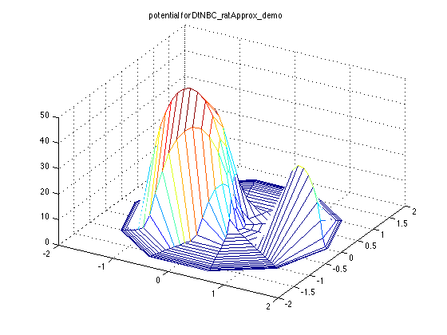
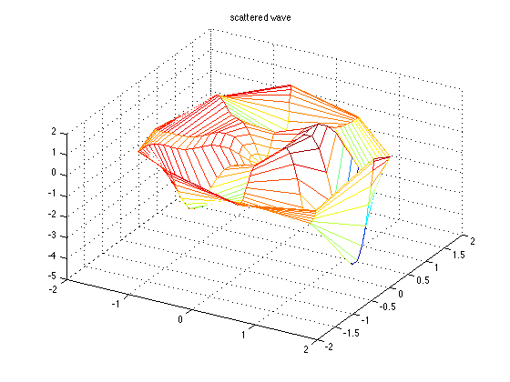
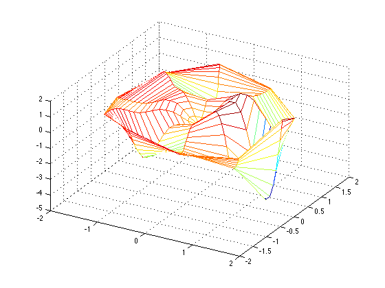
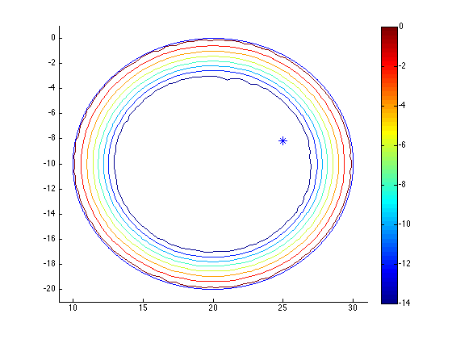
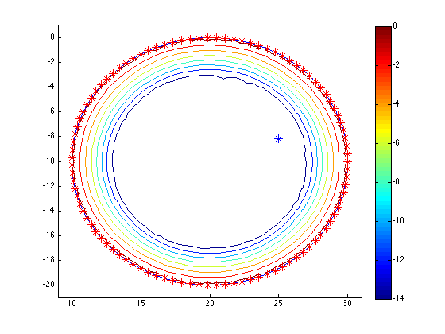

Contents
function demo_basic
% This demo shows how to do scattering and resonance computations using % boundary conditions involving the DtN map or a rational approximation of % same. % % The user is recommended to read the "publish"-ed version in the html % folder rather than invoking this file directly. close all addpath('..') addpath('../tests')
Define a potential
To every potential corresponds a set of resonances we hope to find. For the purposes of demonstration we use a potential consisting of two bumps. Notice the user can choose to specify a potential function in rectangular, polar, or complex coordinates.
d = 2; % center-center distance r1 = d/2; r2 = d/4; % respective radii c1 = (r1-r2)/2 - d/2; c2 = (r1-r2)/2 + d/2; % respective centers (chosen so the smallest possible origin-centered disc encloses both) V01 = 50; V02 = 30; % respective heights V = @(x,y) bump( sqrt((x-real(c1)).^2 + (y-imag(c1)).^2)/r1 )*V01*exp(1) + ... bump( sqrt((x-real(c2)).^2 + (y-imag(c2)).^2)/r2 )*V02*exp(1); coords = 'rect'; % the coordinates you just defined the potential in
Use DtN boundary conditions to solve scattering/resonance problems
Exact but nonlinear boundary condition. Great for solving scattering problems, not so useful for computing resonances.
Pick a radius at which we'll truncate our potential V (which has unbounded support, but hey, we need to pose a problem on a finite domain.)
R = c2+r2;
Pick a mesh of the disc of radius R. We're using a coarse mesh so this demo is fast.
Nt = 10; Nr = 20;
Define the object that sets up scattering and resonance problems using the DtN map. Make the mesh above finer to get a prettier picture.
dtn = DtNBC(Nt,Nr,{V},coords,R);
Now that we have that DtNBC instance dtn, we can plot things. Real quick let's look at the potential to make sure it's what we envisioned.
figure, dtn.plotFun(V,'potential for DtNBC\_ratApprox\_demo',@real,coords);
 Let's solve a scattering problem.
E = 20 - 10i; % energy of an incident plane wave k = sqrt(E); % wave number (in our unitless setting) % incident wave is now e^{ikx}. dtn_scatt = dtn.solve(k); % solve scattering problem with this incident wave % Note that the user can specify any incident wave; solve is overloaded.
Finally, let's plot the scattered wave. dtn_scatt is holding the values of the scattered wave at mesh points, a structure I refer to as a valuesVec. So we use a function to plot valuesVecs.
part = @real; % plot the real part, for example figure, dtn.plotValuesVec(dtn_scatt,'scattered wave',part);
Use a rational approximation to the DtN map instead
The resulting inexact boundary condition isn't as good for scattering, but will let us solve the resonance problem much more easily. Note that the user must choose the region where the rational approximation is best, and thus implicitly choose where we'll be looking for resonances.
Pick an elliptical region to search for resonances. Since we already solved a scattering problem with a certain incident wave energy, let's center a region of interest at that energy.
theta = 0; % rotational angle a = 10; b = 10; % semi-major (a) and -minor (b) lengths nx = 50; ny = 50; % mesh for the bounding box of the ellipse (ell.bb) ell = ellipse(E,theta,a,b,nx,ny);
Define the object that sets up scattering and resonance problems using a rational approximation to the DtN map.
N = 100; % use this many poles in the rational approximation
rat = ratApproxDtNBC(dtn,ell,1,N);
Solve the scattering problem and plot for comparison.
rat_scatt = rat.solve(k); figure, dtn.plotValuesVec(rat_scatt);
Looks pretty much the same. More rigorously, we can compare the values of the computed scattered waves at the mesh points.
abserr = norm(dtn_scatt - rat_scatt); relerr = abserr/norm(dtn_scatt); fprintf('Error between dtn and rat scattered waves at mesh points: %4.2e, %4.2e\n', ... abserr, relerr);
Error between dtn and rat scattered waves at mesh points: 3.13e-12, 1.37e-13
Recalling that the spectral collocation discretization we are using associates values on a mesh to actual functions, we can also compare the underlying scattered wave FUNCTIONS in the L2 norm.
% interpolate on a theta mesh that's twice as fine as the one we used for % solving the problems (and append 2*pi for convenience). other_theta = linspace(0,2*pi,2*dtn.Nt + 1); [abserr, relerr, ~] = ... L2err(dtn, dtn_scatt, dtn, rat_scatt, other_theta); fprintf('Error between dtn and rat scattered waves in L2 norm: %4.2e, %4.2e\n', ... abserr, relerr);
Error between dtn and rat scattered waves in L2 norm: 6.52e-13, 1.36e-13
Compute resonances
We can't compute them exactly straight-off, but we can compute approximations via the rational approximation to the DtN map.
Let's compute whatever resonances are near the center of the ellipse. This amounts to a generalized eigenvalue problem where we use eigs() behind the scenes. For this example, let's look for the 10 resonances near the center of the ellipse.
[resvecs,resvals] = rat.resonances(10);
Plot whatever resonances we got as well as the boundary of the ellipse. In fact, let's plot these on top of the error between the rational approximation and the DtN map.
figure, hold on rat.show_error(ell.bb); ell.draw() ell.bb.focus(1); % add a little space between the ellipse and the figure border plot(real(resvals),imag(resvals),'*b','markersize',10);
Only one resonance in the region of interest was found. Let's make sure it is a resonance.
k_res = sqrt(resvals(1));
residual = svds( dtn.T(k_res), 1, 0);
fprintf('Residual of computed res w.r.t. exact DtN BC: %4.2e\n', residual);
Residual of computed res w.r.t. exact DtN BC: 3.74e-14
The rational approximation was based on the trapezoid rule applied to Cauchy's integral formula. The connection is made clear by looking at the poles of the rational approximation.
for j = 1:length(rat.ratf) z = rat.ratf(j).z; plot(real(z),imag(z),'*r','markersize',10); end